Oponentes
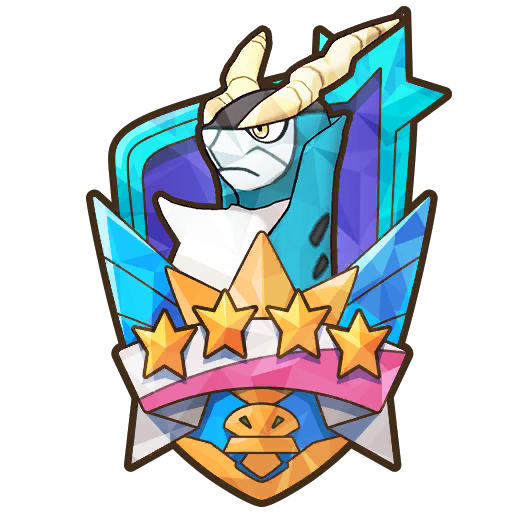
Cobalion
Cobalion recibe menos daño si no sufre un problema de estado. Sin embargo, cada vez que se cure de un problema de estado, aumenta su resistencia en +2 a este hasta volverse inmune.
En la barra de PS 1, Cobalion se curará de problemas de estado cuando sus PS bajen del 50%. A partir de la barra de PS 2, además, se curará de problemas de estado también cada vez que use su movimiento compi.
Cobalion cuenta desde el principio con: Resistencia Quemadura +7, Resistencia Parálisis +1 y Resistencia Veneno +9. No tiene resistencias a Sueño y Congelación hasta que se cure de ellas. Al llegar a +10, se vuelve inmune a dicho problema de estado.
La mayoría de sus movimientos son físicos. Es recomendable reducir su Ataque o aumentar nuestra Defensa. Cuidado en la barra de PS 3, pues usará Espada Santa y aumentará su índice de críticos.
Más información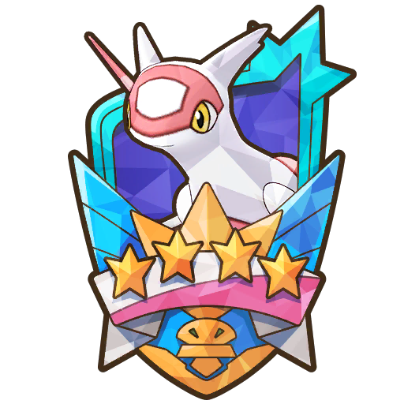
Latias
Cuanto más aumenten sus carácterísticas, menos daño recibirá.
A partir de la barra de PS 2, cada vez que esquive un movimiento, su Evasión aumentará. Sin embargo, cada golpe que reciba hará que su Evasión baje.
En la barra de PS 2, cuando sus PS bajan al 50%, aumenta su Evasión en 6 niveles.
Más información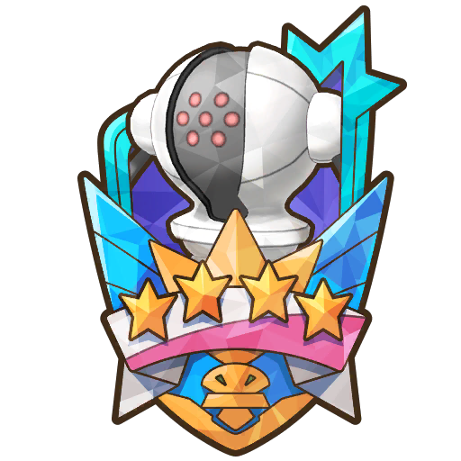
Registeel
Los aumentos y descensos en la Defensa y Defensa Especial afectan más de lo normal a ambos bandos. Registeel se aprovecha de esto aumentando su Defensa y Defensa Especial con movimientos y pasivas, además de recibir aún menos daño si sus defensas aumentan.
Los efectos de campo activados por Registeel serán permanentes, a menos que se consigan anular. Registeel se aprovecha de esto al comienzo de la barra de PS 1 con At. físicos ↓ y At. especiales ↓, al comienzo de la barra de PS 2 con Barra mov. acelerada y al comienzo de la barra de PS 3 con Bloqueo probl. estado.
Cuando sus PS bajan de 50%, en la barra de PS 1 bajará 2 niveles la Defensa de todo tu equipo, en la barra de PS 2 bajará 2 niveles la Defensa Especial, y en la barra de PS 3 bajará 2 niveles la Defensa y la Defensa Especial.
Empezará el combate con Defensa Férrea. Al comienzo de las barras de PS 2 y 3 obtendrá Siguiente crítico y Siguiente certero y usará Terremoto. Ten cuidado en las barras de PS 2 y 3 cuando sus PS bajen del 50%: puede usar Hiperrayo (barra de PS 2) y Gigaimpacto (barra de PS 3).
Más informaciónCombates
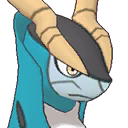
VS. Cobalion
No hay mucho que decir. Usar el movimiento de entrenador, los movimientos sincro cada vez que puedas y todo el tiempo Cabeza de Hierro. Entre que puede retroceder y lo que se cura, Cobalion apenas le hace daño.
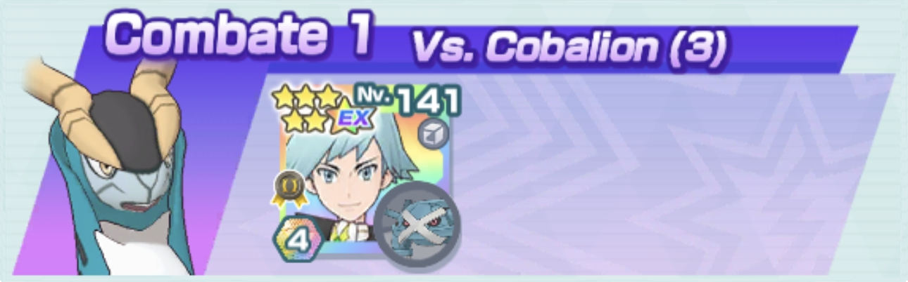
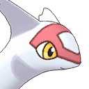
VS. Latias
Comienza reduciendo la Precisión de Latias hasta -3 y continúa bajando el contador con Electrotela. Usa el primer movimiento de entrenador antes del movimiento compi. Será necesario recuperar al menos un PM. Derrota primero a Flygon y luego a Alakazam. Vigila el daño y cúrate con Carga Parábola mientras continúas reduciendo las características de Latias. Al inicio de la barra de PS 3 Latias usará Terremoto, así que cúrate para solventar el daño que te hará.
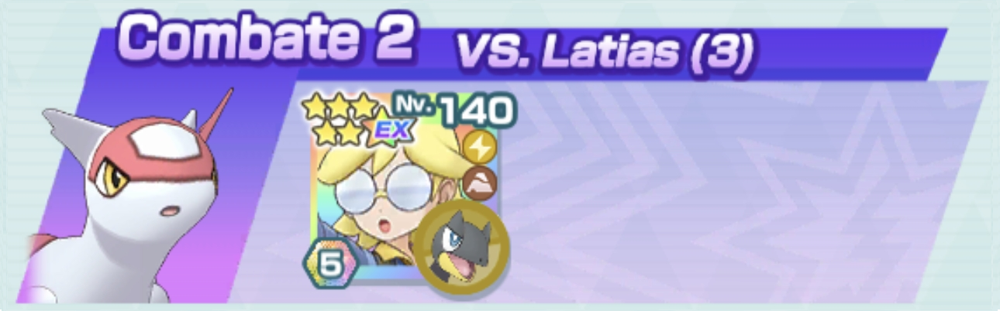
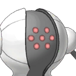
VS. Registeel
Usa los movimientos de entrenador al principio y el movimiento sincro cada vez que tengas opción para aumentar tus defensas. Registeel debe permanecer siempre confuso para que Articuno no pare de curarse con cada movimiento.
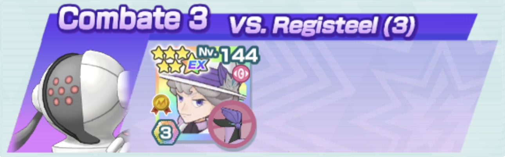
VS. Cobalion
Combate rapidísimo sin consumo de barras, que deja los stats de Cobalion por los suelos e incluso puedes hacerlo retroceder. Procura que el círculo no desaparezca, pues hace que Virizion se cure y tenga Siguiente sin coste. Reserva Espada Santa Alba para la barra de PS 3.
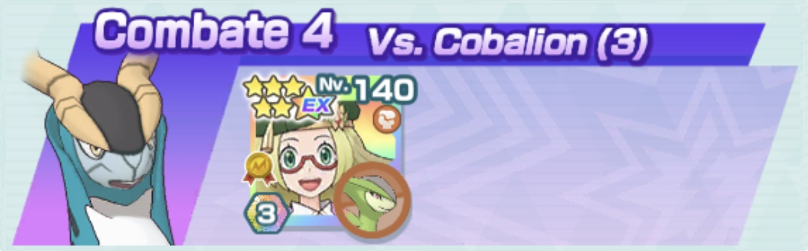
VS. Latias
Ataca todo el tiempo con Brillo Mágico para dañar a todos los oponentes. Cuando los PS de Xerneas bajen, usa Asta Drenaje contra Flygon y después contra Alakazam (derrótalos en ese orden). En la barra de PS 2 ataca con Brillo Mágico para poder reducir la Evasión de Latias todo lo posible porque puede entorpecer mucho el combate. Atento al Terremoto del inicio de la barra de PS 3.
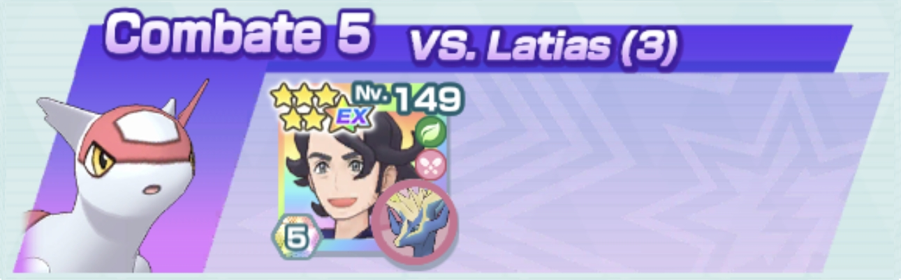
VS. Registeel
Al principio intercala los Directos con Patada Relámpago. Como Registeel comienza con Tumba Rocas, aprovéchate de la pasiva de Zapdos para que un ataque no tenga coste. Pon la primera Zona Lucha para ir curándote y resistiendo golpes y la segunda antes del movimiento compi. Usa el movimiento compi cuando acabes con la barra de PS 1 y empiece la 2. Con suerte, acabará con él.
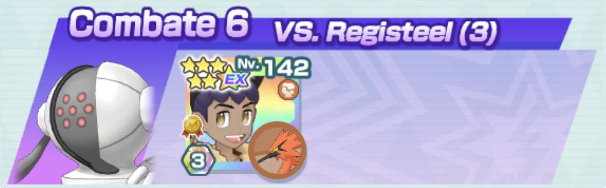
VS. Cobalion
Baja el contador al principio con Impactrueno hasta 1, usa el movimiento de entrenador y después el movimiento compi para poner Campo Eléctrico gracias al rol de Entorno. El movimiento sincro ignora las pasivas de Cobalion. Procura que esté paralizado cuando uses el movimiento compi.
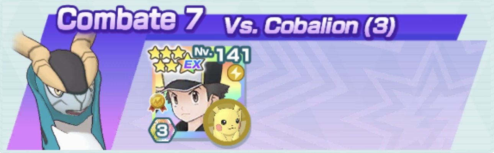
VS. Latias
La casilla del tablero y su habilidad fortuita bajan características a tutiplén. Sus movimientos golpean a todos y puedes quitarte a los Pokémon de los lados muy rápido. Pero cuidado al comienzo de la barra de PS 3... reza para que Avalancha haga retroceder porque como use Terremoto estás KO.
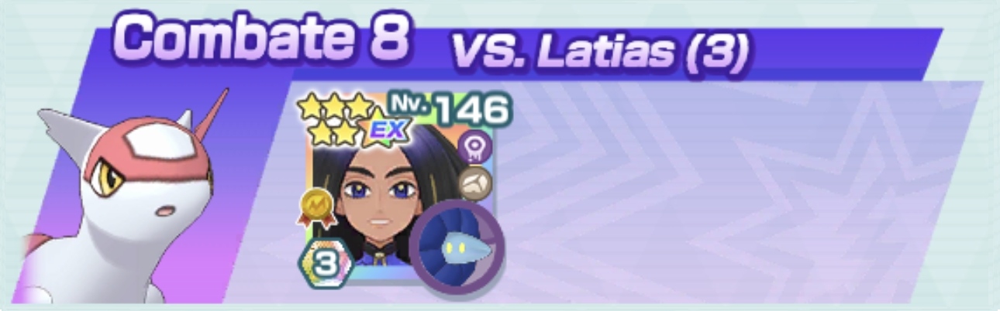
VS. Registeel
Inicia el combate usando Bucle Arena. Usa el movimiento de entrenador cuando recibas daño para comenzar la regeneración de PS. Usa Tormenta Arena con el contador a 4 y, acto seguido, Terremoto de Poder Celestial. A partir del movimiento compi, usa seguidamente el movimiento sincro (atendiendo a la tormenta de arena para que no cese).
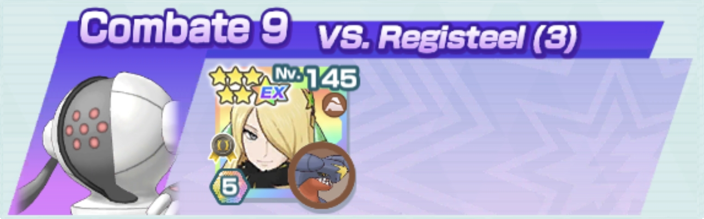
VS. Cobalion
El primer patrón de movimientos es: Encanto, Onda Trueno y movimiento de entrenador. Si este último no recupera PM, reinicia. Baja el Ataque de Cobalion al máximo y luego usa repetidamente Onda Trueno. Puedes usar Foco Resplandor para rematar alguna de las barras de PS. Atento a la subida de Ataque para volver a usar Encanto y a los momentos en los que se cura de la parálisis para usar Onda Trueno.
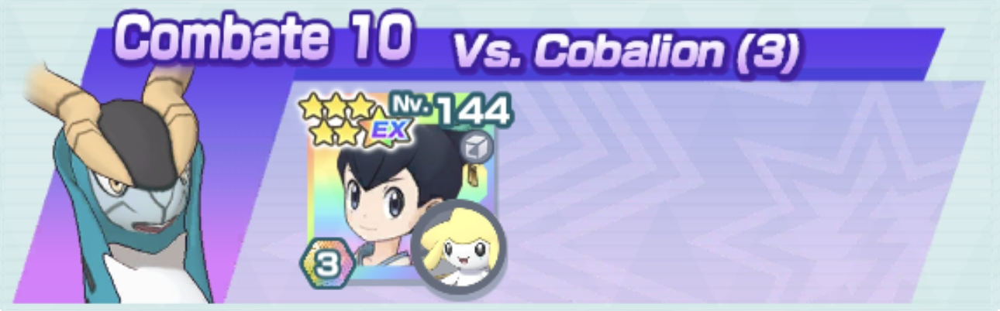
VS. Latias
Usa los movimientos sincro y ataca repetidamente con Pistola Agua. Acaba primero con Flygon y luego con Alakazam. Al comenzar la barra de PS 2 preocúpate por reducir primero la Evasión de Latias al mínimo antes de usar algún movimiento compi. En la barra de PS 3 usa Recuperación tras el Terremoto de Latias. Los movimientos de entrenador no son necesarios, pero pueden ayudar a reducir el contador en caso de que Jellicent retroceda.
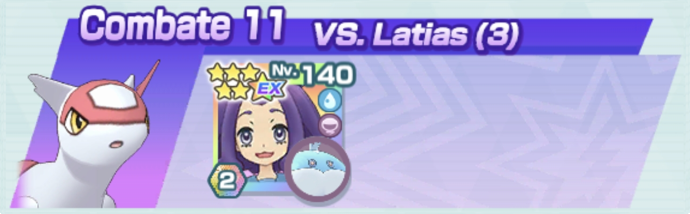
VS. Registeel
Empieza con Sable Místico y continúa con Esfera Aural hasta que la Defensa Especial de Registeel esté a -6. Usa el movimiento de entrenador (no importa si no recupera PM) y continúa con Esfera Aural. Si tienes suerte con los retrocesos y sin que te paralice, es un combate sencillo. Si vas sobrado de barras en la barra de PS 3 puedes rematarlo a base de Sable Místico.
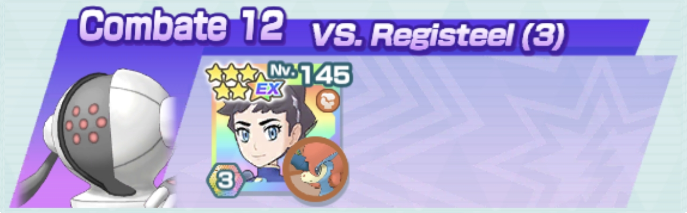
VS. Cobalion
El patrón inicial es: movimiento de entrenador, tres veces Onda Trueno y movimiento sincro. En cuanto esté la Zona Voladora podrás atacar más rápido y curarte. Paraliza a Cobalion cada vez que se cure. En la barra de PS 3, tras paralizarlo, vuelve a usar el movimiento sincro y lo fulminarás.
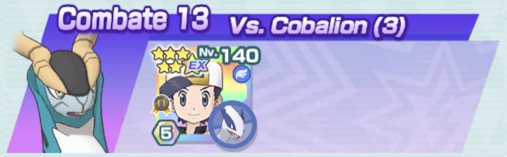
VS. Latias
Comienza atacando a Latias con Bola Sombra y Golpe Umbrío para reducir sus defensas. A continuación, usa el movimiento de entrenador. Como Alakazam te habrá atacado, usa Bola Sombra en Latias y luego en Flygon para hacerlos retroceder. Acaba con la barra de PS 1 con el movimiento compi. En la barra de PS 2, usa Bola Sombra dos veces y después el movimiento sincro. En la barra de PS 3 intenta anticiparte al Terremoto de Latias con Golpe Umbrío.
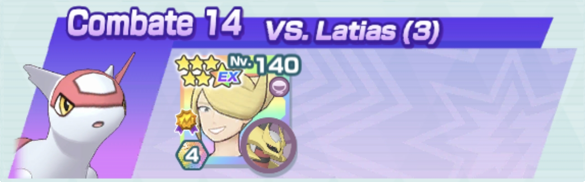
VS. Registeel
Usa el movimiento de entrenador, Garra Dragón y reduce la barra de PS 1 a base de Teraexplosión. Inicia la barra de PS 2 con Enfado y continúa con Teraexplosión. Usa Protección antes del movimiento compi.
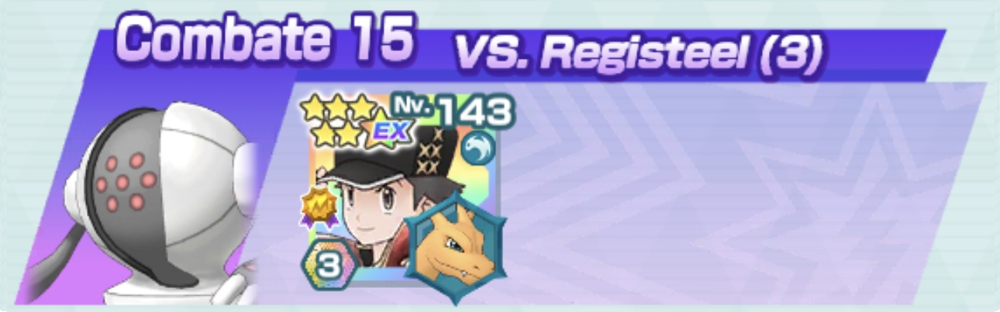
VS. Cobalion
Comienza con el movimiento de entrenador, Fuego Fatuo y un par de Ondas Ígneas. Usa Día Soleado cuando el contador esté a 3. Intenta reducir el contador con Fuego Fatuo en la medida de lo posible en lo que Fuecoco aumenta su Velocidad. Debe hacer sol y Cobalion estar quemado cuando Fuecoco use su movimiento compi.
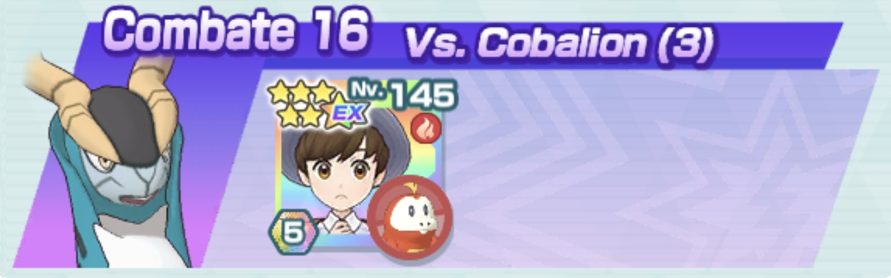
VS. Latias
Usa Malicioso hasta reducir el contador a 2, luego el movimiento de entrenador y el movimiento sincro contra Alakazam. Usa el movimiento compi contra Latias. En la barra de PS 2, derrota primero a Alakazam y luego a Flygon con el movimiento sincro. Cuando te quedes solo con Latias, es continuar usando Malicioso hasta atacar con el movimiento compi. Si consigues recuperar PM en la Poción es más viable.
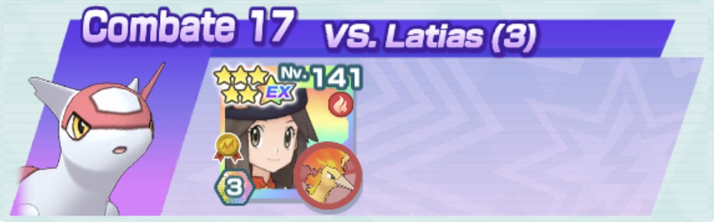
VS. Registeel
Bufa a Koraidon y usa el movimiento sincro al inicio de cada barra de PS. Para el resto del combate con Nitrochoque y el movimiento compi es suficiente.
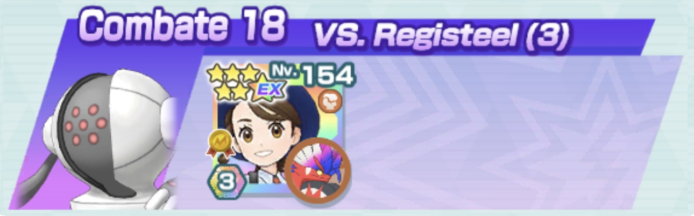
VS. Cobalion
Durante el previo al primer movimiento compi solo usarás Picotazo, tres veces Nitrocarga y el movimiento de entrenador (que debe recuperar PM). Tras el primer movimiento compi, sigue con Picotazo, otro movimiento de entrenador cuando se acabe la regeneración de PS y los Directo. Entonces usa el movimiento compi SOLO si Cobalion está aproximadamente al 70% de PS y quemado. Esto último vale tanto para la barra de PS 2 como la 3.
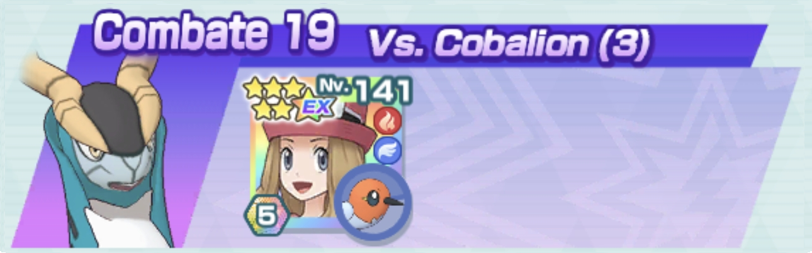
VS. Latias
Si no recupera PM en Def. Esp. X Múltiple, reinicia. Comienza envenenando a todos los Pokémon (una vez desaparezca el Velo Sagrado) y ve alternando los ataques entre todos para ir reduciendo su ofensiva. En cuanto a los movimintos compi, acaba primero con Flygon y después con Alakazam. Reserva el movimiento sincro para la barra de PS 3 después de que Latias use Terremoto y justo antes de que Clodsire use su movimiento compi.
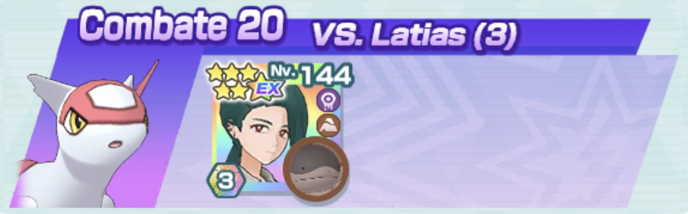
VS. Registeel
Comienza con Triple Flecha y usa Barra Mov. ↑ cuando no consigas llegar a otro movimiento. Usa el movimiento de entrenador con el contador a 2 y ataca con el movimiento compi. Lo siguiente es usar el movimiento sincro y continuar con Triple Flecha hasta derrotar a Registeel.
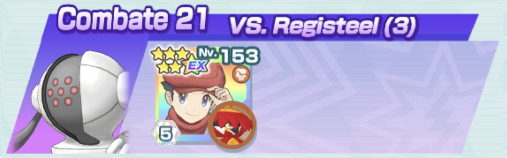
VS. Cobalion
Combate muy largo y que requiere mucha paciencia. Reserva el movimiento sincro para la barra de PS 2 e intenta dejar las Pociones todo lo que puedas para el final. A partir de la barra de PS 2 vigila el uso de Onda Vacío para paralizar a Cobalion y fíjate si puede curárselo en breve. Por ejemplo, si Cobalion tiene el contador a 1, espera a que ataque y paralízalo después de su movimiento compi para que la resistencia a la parálisis no aumenten en vano.
VS. Latias
Ataca repetidamente con Chispazo. Usa el movimiento de entrenador justo antes del segundo movimiento compi y el movimiento sincro antes de cambiar a la barra de PS 2. Esta barra será crucial, pues debes hacer todo lo posible para reducir al mínimo la Evasión de Latias.
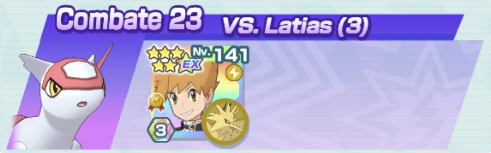
VS. Registeel
Kalm debe recuperar PM en su movimiento de entrenador. Mantén a Greninja al tipo Agua para que pueda ir curándose y evitar la parálisis del principio. Sin embargo, antes de que bajen los PS de Registeel al 50% en cada barra de PS, cambia a Greninja a tipo Siniestro para evitar bajadas en sus defensas.
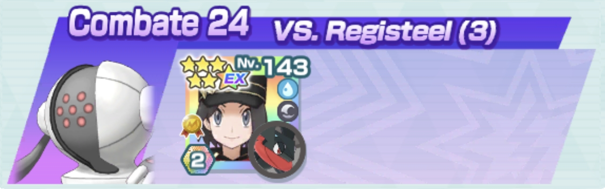
VS. Cobalion
Debes recuperar dos veces PM en el movimiento de entrenador, pero hazlos mientras haga sol. El resto del combate consiste en acribillar a Cobalion a base de Recurrente y movimientos compi. Prioriza recuperar PS en caso de apuros. Es decir, aun teniendo el movimiento compi listo, si Tapu Bulu está en problemas, haz que recupere PS antes de usar el movimiento compi.
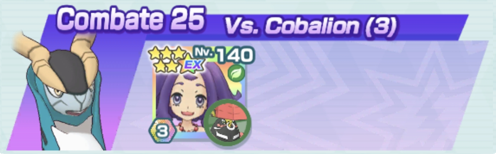
VS. Latias
Es preferible que el movimiento de entrenador de Oak suba la Defensa de Mew y que Leti recupere PM en Defensa Especial X Múltiple. Mew pondrá el pecho pero gracias a los aumentos de Evasión podrá esquivar algunos golpes. El movimiento compi lo usará siempre Leti para ir curando al equipo. Usa Rapidez y Confusión constantemente.
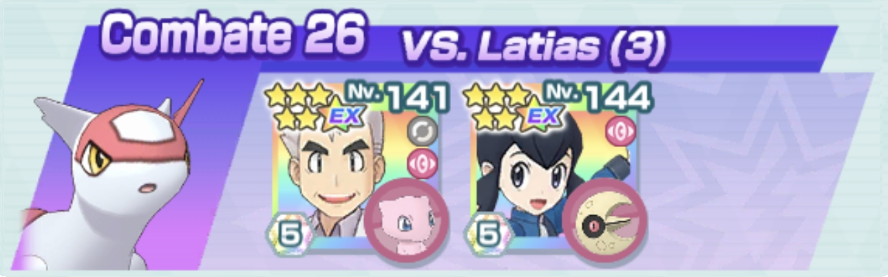
VS. Registeel
Depende mucho de la suerte con la que hagas retroceder con Impresionar. Si no tienes a Morti EX no uses el movimiento compi de Mismagius y céntrate en usar el de Nidoking. Si consigues que la Defensa de Registeel haya bajado lo suficiente, Nidoking hará mucho daño. Reserva el movimiento dinamax para rematar.
VS. Cobalion
Usa Rayo Umbrío hasta que el contador de movimiento compi esté a 3. Usa el movimiento de entrenador y luego el movimiento compi. Usa el movimiento sincro en la barra de PS 2 y continúa con Rayo Umbío hasta derrotarlo.
VS. Latias
Usa las órdenes de Lectro mientras Blissey usa Vozarrón. Ataca repetidamente con Chispazo de Raichu y, si en algún momento la barra de movimientos flaquea, aprovecha para usar Especial X Múltiple de Malta. Usa el primer movimiento compi con Blissey para dar regeneración de PS al equipo (puedes volver a usarlo si necesitas más). Raichu usará el suyo para hacer más daño. Derrota primero a Flygon y después a Alakazam.
VS. Registeel
Si ejecutas bien los movimientos, puedes tener todo el tiempo dormido a Registeel: Canto, turno de Lucario, turno de Primarina, Canto y repetir. Durante la primera mitad de la barra de PS 1 Lucario usará Onda Vacío (o Puño Incremento si megaevoluciona) para que la barra no se resienta hasta que Primarina consiga subir la Velocidad del equipo. Cuidado en la barra de PS 3 ya que Registeel es inmune a problemas de estado.
VS. Cobalion
Usa el movimiento de entrenador y Teraexplosión hasta reducir sus características al máximo. Puedes optar por continuar con Teraexplosión para intentar que retroceda o atacar con Balón Ígneo para hacer más daño e incluso llegar a quemarlo. Ambas estrategias funcionan porque Cinderace aguanta mucho.
VS. Latias
Lo ideal es que ambos recuperen PM en sus movimientos de entrenador. Ataca continuadamente con Brillo Mágico y Aire Afilado para reducir las características de los oponentes. Debilita primero a Flygon y luego a Alakazam. Reserva las Zonas Voladoras para usarlas junto al movimiento compi de Tornadus en las barras de PS 2 y 3.
VS. Registeel
Administra las barras aceleradas usando primero el movimiento de entrenador de Néstor. Cuando se agote el efecto, usa el de Clavel y así sucesivamente con sus órdenes. Incordia con Pulso Umbrío de Honchkrow y alterna entre Danza Acuática y el movimiento sincro de Quaquaval para reducir la Defensa de Registeel. Quaquaval solo usará el movimiento compi la segunda vez, el resto los hará Honckrow para ir curando al equipo.
VS. Cobalion
Inicia con Meteoimpacto y después usa el movimiento de entrenador. Tendrás que esperar un poco para usar cada ataque. Usa el primer movimiento sincro al comenzar la barra de PS 2 para no desaprovechar el daño.
VS. Latias
Spamear Brillo Mágico con Hatterene y Beso Drenaje con Azumarill para bajar cracterísticas. Derrota primero a Alakazam, luego Flygon y por último Latias. Guarda el movimiento dinamax para finalizar la barra de PS 2 (si puedes usar un movimiento compi al empezar la 3) o para acabar el combate.
VS. Registeel
Lo ideal es que ambos recuperen PM en su movimiento de entrenador, pero con que lo haga Aníbal es suficiente. Aquí desearás que Registeel te paralice para activar la pasiva de Stoutland y acelerar la barra de movimientos. Reduce primero la Defensa de Registeel con Golpe Roca y luego líate a Puño Dinámico con él. Reserva Protección para la barra de PS 3 y úsalo después del Terremoto de Registeel.
VS. Cobalion
Usa los dos PM del movimiento de entrenador de Registeel y aumenta la Velocidad del equipo con Garra Metal. Meteoimpacto de Solgaleo ignora las pasivas de Cobalion así que pégale a discreción. Atiende a los PS de Registeel antes de comenzar la barra de PS 3, pues Cobalion la inicia con Espada Santa.
VS. Latias
Usa tres veces Viento Hielo con Glaceon, movimiento de entrenador de Nákara y Voluntad Hielo. En cuanto a Jynx, aumentará su Velocidad e irá atacando con Rayo Hielo a Latias. Usa el movimiento compi de Glaceon directamente contra Latias para llegar cuanto antes a la segunda mitad de la barra de PS 1 y evitar el Bofetón Lodo. Los Pokémon laterales irán cayendo con los demás Viento Hielo. En cuanto a la barra de PS 2 no te precipites y reduce primero la Evasión de Latias al máximo, aunque eso suponga usar un movimiento compi con Jynx. En cuanto lo consigas, pon Zona Hielo, usa el movimiento compi de Glaceon, movimiento sincro en la barra de PS 3 y pon fin al combate. Jynx tiene Inmunidad Golpes Críticos como habilidad fortuita.
VS. Registeel
Mientras Sirfetch'd se boostea, Cobalion irá bajando la Defensa de Registeel. Cuando acabe, Jugador podrá usar su movimiento de entrenador. Intenta que Sirfetch'd llegue con el máximo de defensa a la barra de PS 3 para que destruya a Registeel a base de Asalto Estelar.
VS. Cobalion
Chris puede recuperar PM en su movimiento de entrenador por si hiciera falta más falta regeneración de PS, pero no es totalmente necesario. Golem solo está para poner el pecho. Reshiram debe bajar el Ataque y Ataque Especial de Cobalion al máximo y entonces empezará a usar Llama Azul. Si Cobalion aumenta alguno de sus ataques, vuelve a bajarlo con Rugido de Guerra. Cuanto más aguante Golem, más podrá atacar Reshiram sin preocuparse.
VS. Latias
Misty debe recuperar PM en Def. Esp. X Múltiple y sería lo ideal que lo hiciera también en su movimiento de entrenador. Usa las órdenes de Lionel dejando su movimiento de entrenador el primero para su primer movimiento compi y el segundo para usar el movimiento dinamax contra Latias. Derrota primero a Flygon y luego a Alakazam. Vigila los PS de los Pokémon al comenzar la barra de PS 3.
VS. Registeel
Tyranitar únicamente usará Avalancha para incordiar y allanar el terreno a Leafeon. Usa el movimiento sincro de Leafeon en las barras de PS 1 y 3. Como Leafeon será el que tanquea, cuantas más veces recupere PM Síntesis, más fácil será completar el combate.
VS. Cobalion
Arcanine usará constantemente Rapidez, solo usará Hiperrayo cuando pueda sobrepasar el 50% o acabar con la barra de PS de Cobalion. Atiende a cuándo usar Onda Trueno para que Cobalion no aumente la resistencia a la parálisis. Raichu usará siempre el movimiento compi para ir curando, úsalo solo con Arcanine si ves que ya puede derrotar a Cobalion.
VS. Latias
Reinicia si Zarala no recupera PM en su movimiento de entrenador. Dragapult eliminará a los Pokémon de los flancos con el movimiento sincro mientras reduce las características de Latias. Banette usará Rayo Confuso para ir regenerando PS, pero no lo hagas en la barra de PS 2. Fulmina la barra de PS 2 con un movimiento compi de Dragapult cuando la Evasión de Latias esté reducida. Sin embargo, antes de entrar en la barra de PS 3, pon Maxibarrera a Dragapult y usa Golpe Fantasma de Banette para evitar el daño del Terremoto.
VS. Registeel
Usa todo el rato Malicioso con Watchog mientras se boostea Machamp. Cuando Registeel use Golpe Cuerpo por primera vez, usa Def. Esp. X Múltiple de Aloe y vuelve a usar Malicioso para que el movimiento compi de Watchog llegue antes que el de Registeel. La barra de PS 1 debes dejarla muy cerca del 50% antes de que Machamp use su movimiento compi. Y ya es tener suerte para recuperar PM en el movimiento de entrenador de Aloe.
VS. Cobalion
Sí, la unidad de apoyo es la que pega y la de sabotaje la que tanquea. Lo ideal sería que Lira recuperara PM de su movimiento de entrenador, pero procura que mínimo lo haga Erika. El movimiento compi de Meganium hace bastante daño, así que vigila cuándo paralizar a Cobalion. Al inicio de la barra de PS 3, deja que ataque continuamente Vileplume parra que se cure con el sol y aguante los golpes de Cobalion. Si consigues llegar al menos al movimiento compi de Meganium cuando Cobalion está cerca de la mitad de los PS de su última barra, lograrás derrotarlo.
VS. Latias
Si consigue retroceder con Carga Dragón cuando debe, Tristana cumplirá su función. Trata de recuperar PM en el movimiento de entrenador de Tristana y derrota primero a Alakazam y después a Flygon. Si Maya también recuperase PM en su movimiento de entrenador el combate sería más facil.
VS. Registeel
Usa todas las órdenes tratando de que Camus aumente al menos las defensas del equipo a +4. Usa el primer movimiento compi con Togepi por el boost de determinación y actaca con Lariat Oscuro de Incineroar. Cada movimiento compi de Incineroar acabará con todas las barras de PS.
VS. Cobalion
Gerania debe recuperar PM en su movimiento de entrenador. Atiende a la parálisis y los daños que realiza Zebstrika. Destina las Pociones a Swanna, Camila puede curar a Zebstrika con su movimiento de entrenador. De hecho, cuantas más Pociones recupere Gerania, más llevadero es el combate.
VS. Latias
Comienza usando Niebla y si no recupera PM, reinicia. Los otros usos de Niebla los harás en la barra de PS 2 después de que Latias use Paz Mental y al inicio de la barra de PS 3. Lo ideal es que los movimientos de entrenador también recuperen PM para hacer el combate más llevadero. Comienza atacando a Alakazam y usando el movimiento compi de Alakazam contra él. Sigue atacando y usa el movimiento compi de Vaporeon contra Flygon. El resto del combate es seguir atacando y usando el movimiento compi de Vaporeon con la barra de movimientos llena. Usa Reflejo al inicio de la barra de PS 3 para mitigar el daño de Terremoto.
VS. Registeel
Hay que tener mucha paciencia. Jugador debe recuperar PM de su movimiento. Usa el movimiento de entrenador de Lotto para que Conkeldurr tenga la Defensa al máximo nada más empezar. Alterna Golpe Roca y Puño Drenaje en función de si necesitas curarte o bajar la Defensa de Registeel. Los movimientos especiales hacen mucho daño a Conkeldurr así que ve con cuidado. En este combate te interesa que Regissteel te paralice. Usa el movimiento compi de Torchic para ir curando. Usa solo el de Conkeldurr para finalizar el combate.
VS. Cobalion
Comienza envenenando con Crobat y atacando con Onda Ígnea de Volcanion. Cuando gane resistencia al veneno, empieza a quemarlo con Volcanion. En la barra de PS 3, quema a Cobalion, usa el movimiento sincro y con un Onda Ígnea ya lo derrotarás.
VS. Latias
Usa las órdenes de Mirto. El movimiento de entrenador de Nereida úsalo a mitad de la barra de PS 1 cuando el equipo necesite regenerar PS. Ataca con Estoicismo y Pistola Agua para ir más ligero, Chupavidas para ir curando a Araquanid e Hiperrayo si tienes suficientes barras. Derrota primero a Flygon y después a Alakazam. Reserva Vasta Guardia para el comienzo de la barra de PS 3 para evitar el Terremoto.
VS. Registeel
Usa los movimientos de entrenador y espera a que amaine la tormenta de arena para evitar que Ferropaladín se dañe. Entretanto aumenta las defensas de Gigalith con sus movimientos. Usa el movimiento compi de Gigalith cuando necesites curar y el de Ferropaladín para hacer más daño.
VS. Cobalion
Usa los movimientos de entrenador de Naboru y Protección tras el Golpe Aéreo de Cobalion. En la barra de PS 1 solo atacará Centiskorch. Fortunia usará su movimiento de entenador antes del movimiento compi de Cobalion y Seviper pondrá ataduras después de este. Tras el segundo movimiento compi de Centiskoch, usa su movimiento dinamax para aumentar la ofensiva del equipo. Al iniciar las barras de PS 2 y 3, envenena y pon ataduras a Cobalion y reduce sus PS con cuidado de no llegar al 50%. Seviper las fulminará con su movimiento compi.
VS. Latias
Todo debe salir bien orquestado. Maya debe recuperar PM en su movimiento de entrenador y Latias debe fallar Bofetón Lodo (ya sea porque Dewgong la congela o falla porque Wormadam aumentó su Evasión). Aunque Dewgong debe bajar la Velocidad con Viento Hielo, también tiene que mantener congelado a Flygon para que no haga tanto daño. Derrota primero a Flygon y después a Alakazam. Baja la Evasión de Latias al mínimo en la barra de PS 2 y, al comenzar la barra de PS 3, intenta congelarla. Si no lo consigue, Dewgong se debilitará, pero Wormadam puede finalizar el combate.
VS. Registeel
Reinicia si Selene no recupera PM en su movimiento de entrenador. Incordia a Registeel con Pisotón de Kangaskhan y, cada vez que retroceda, usa Malicioso. Usa el movimiento de entrenador de Jugador cuando Kangaskhan necesite rgeenerar PS. Mantén bajo Relevo imposible a Registeel y, cuanto más retroceda, más llevadero será el combate. Kangaskhan tiene Ataque Defensa Especial ↓ +2 como habilidad fortuita.
VS. Cobalion
Usa primero el movimiento de entrenador de Débora, a continuación el de Máximo y reinicia si Máximo no recupera PM en Defensa X Múltiple. Paraliza a Cobalion con Dragoaliento y continúa reduciendo sus PS con Cometa Draco. Administra las Pociones entre ambos Pokémon pero si Máximo recupera suficientes, el combate es sencillo.
VS. Latias
Intenta que Clavel recupere PM en su movimiento de entrenador. Mientras Alakazam y Flygon estén en pie, ataca con Tormenta Floral. Cuando Latias esté sola, cambia a Recurrente. Clefairy atacará todo el tiempo con Voz Cautivadora para bajar características. Usa la orden de Lylia sobre Sprigatito cuando vaya a usar su movimiento compi contra Latias. En cuanto a Precisión X Múltiple, úsalos en cada cambio de barra de PS para que Clefairy recupere PS y no sea tan tedioso bajar la Evasión de Latias.
VS. Registeel
Mientras Fátima usa sus órdenes, Hariyama empezará bajando la Defensa de Registeel con Golpe Roca. A continuación, usa las órdenes de Marcial. Usa el primer movimiento compi con Dusknoir por el boost de determinación. Los siguientes que los haga Hariyama siempre antes de reducir los PS de Registeel a la mitad y con su Defensa reducida todo lo posible.
VS. Cobalion
Intenta hacer todo el daño que puedas porque Infernape es de papel. Si tienes suerte de que Bruno recupere Pociones, el combate no es tan complicado. Como siempre, vigilar la parálisis para que Cobalion no acabe inmune a ella. Como Latios bajará la Defensa Especial de Cobalion, Infernape solo usará Llamarada.
VS. Latias
Reinicia si Blas no recupera PM en Defensa X Múltiple. No uses el movimiento sincro ni los Círculos de Sinnoh hasta empezar la barra de PS 2. Reduce la Precisión de Latias con Bofetón Lodo de Rellor y usa Chupavidas cuando necesite recuperar PS.
VS. Registeel
Maya debe recuperar PM en su movimiento de entrenador. Usa las órdenes de Koga y envenena a Registeel con Colmilllo Veneno en las barras de PS 1 y 2. Usa prácticamente todo el combate el movimiento compi con Cresselia para ir curando al equipo. Hazlo con Crobat solo si el equipo tiene suficientes PS o si puede finalizar el combate.
VS. Cobalion
Usa las órdenes de los entrenadores, paraliza a Cobalion con Impactrueno y ataca con V de Fuego de Victini. Con dos Pociones solo creo que el combate es más difícil así que mínimo debe recuperar alguna. Si al final del combate cae Pikachu, trata de quemar a Cobalion con Bomba Ígnea para que el daño no se reduzca.
VS. Latias
Tras usar las órdenes, ataca con Recurrente a los tres Pokémon para intentar hacerlos retroceder. Mientras, Venusaur aprovechará el Campo de Hierba para atacar con su movimiento sincro. El combate no tiene mucha complicación. De hecho puedes usar el movimiento dinamax de Venusaur cuando quieras.
VS. Registeel
Usa el movimiento de entrenador de e-Nigma y luego un uso del de Roxy a cada Pokémon. Durante la barra de PS 1 ataca todo el tiempo con Triturar de Scrafty mientras Beellibolt farmea Siguiente Especial ↑. Si consigues llegar a 10, la barra de PS 2 la fulminará de un Onda Certera. En la barra de PS 3 con un par más lo terminarás venciendo.
VS. Cobalion
Reinicia si Mencía no recupera PM en su movimiento de entrenador. Usa las órdenes de Teniente Surge y reduce el Ataque Especial de Cobalion con Onda Anómala. Paraliza con Puño Trueno de Pawmot. Salvo el segundo movimiento compi que lo hará Pawmot, los demás los hará Electrode. Usa el movimiento sincro de Pawmot para terminar las barras de PS 1 y 3.
VS. Latias
Lo mejor es que Alecrán recupere PM en su movimiento de entrenador, pero creo que no es imprescindible. Mientras Hydreigo reduce las caracteríticas de los oponentes, Vespiquen irá aumentando las defensas del equipo. Durante la barra de PS 2 ataca con Hydreigon para reducir la Evasión de Latias ya que cuenta con Efecto Certero.
VS. Registeel
Intenta que Yasmina recupere PM en Defensa X Múltiple. Aumenta el Ataque Especial y el Crítico de Hitmontop y líate a Onda Certera. Con Steelix intentarás bajar la Defensa con Cola Férrea. Usa el movimiento de entrenador de Yasmina cada vez que cambies de barra de PS.
VS. Cobalion
No uses el movimiento de entrenador de Lionel. Bufa a Charizard con el de Israel y, tras paralizar a Cobalion, aumentará su crítico con cada ataque que aseste. Mientras esté paralizado, ataca con Infierno de Charizard. Usa el primer movimiento compi con Roserade para aumentar la determinación y reserva el movimiento dinamax para acabar el combate.
VS. Latias
Recupera PM en Evasión X Múltiple por si acaso, aunque quizás no es necesario. Comienza atacando con Brillo Mágico de Granbull y bufa con el movimiento de entrenador de Fausto. Reserva el de Aroa para la barra de PS 2 junto con el movimiento sincro y un movimiento compi para fulminarla. Ve atacando con Nitrocarga a Alakazam para reducir su Ataque Especial mientras Granbull derrota primero a Flygon con sus movimientos compi. Usa Bote de Rapidash para esquivar Bofetón Lodo (después del primer movimiento compi de Latias) y Terremoto (al comenzar la barra de PS 3).
VS. Registeel
Usa el movimiento de entrenador de Israel. Deja a Registeel usar Defensa Férrea y usa después el movimiento de entrenador de Mento. Pon Zona Lucha y usa el movimiento sincro de Infernape. El resto del combate es atacar con Tajo Aéreo y A Bocajarro. Usa el primer movimiento compi con Xatu para que tenga regeneración de PS. Usa de nuevo el movimiento sincro de Infernape antes de que se agote la primera Zona Lucha.
VS. Cobalion
Empieza quemando a Cobalion con Fuego Sagrado. Reinicia si Glaido no recupera PM en su movimiento de entrenador. Usa el primer movimiento compi con Golbat para ganar más determinación. Envenena a Cobalión con Colmillo Veneno en la segunda mitad de la barra de PS 1 y al principio de las barras de PS 2 y 3. Al comenzar la barra de PS 2, intenta usar el movimiento compi de Ho-Oh antes de que los PS bajen del 50%. Si al inicio del combate Cobalion falla algún Roca Afilada, el combate será menos problemático.
VS. Latias
Lo más coñazo es tratar de que se recuperen PM tanto en Día Soleado como en el movimiento de entrenador de Morti. Tras usar las órdenes de Camus, Leavanny atacará todo el tiempo con Viento Plata a Latias para ir bajando características. Recomendable tener a Camus exeado para que elimine más rápidamente a los Pokémon laterales con el movimiento compi. Cuando Latias se quede sola ya es ir atacando con Nitrocarga y Viento Plata. Usa el sol en tu favor para los movimientos compi de Leavanny.
VS. Registeel
Usa las órdenes de los entrenadores y comienza a reducir la Defensa de Registeel al mínimo con Malicioso de Crawdaunt mientras Lucario reduce sus PS a base de A Bocajarro. Usa el primer movimiento compi con Crawdaunt para mayor determinación. Es posible que con el daño de Lucario puedas llegar a usar su movimiento compi en la barra de PS 2 para finiquitarla y el movimiento dinamax para acabar con la barra de PS 3.
VS. Cobalion
Kalm debe recuperar PM en su movimiento de entrenador con facilidad para que Meowstic dure todo lo posible. De hecho, es preferible que inicie cada barra de PS con sus PS al máximo. Usa Onda Trueno rápidamente siempre que toque para que el daño de Blaziken no se vea mermado.
VS. Latias
Usa el movimiento de entrenador de Florian y Directo+ de Dianta. Ataca con Vozarrón y Brillo Mágico hasta derrotar a los Pokémon laterales. Tras esto, ve alternando con Placaje de Lechonk para que vaya curando e intentando retroceder. Usa siempre el movimiento compi con Gardevoir y, después del primero, usa el movimiento de entrenador de Dianta. En la barra de PS 2 no uses el movimiento compi de Gardevoir hasta que la Evasión de Latias esté al mínimo.
VS. Registeel
Mientras Blasco bufa a Gallade, usa Recurrente de Deerling para hacer retroceder y bajar caracteríticas. Cada vez que Registeel retroceda, aprovecha para usa Energibola y reducir sus defensas o Gigadrenado por si Deerling necesita recuperar PS. Usa el primer movimiento compi con Deerling por tener un poco más de tiempo el Campo de Hierba y el Círculo de Teselia y así Gallade continuará bajando la Velocidad de Registeel.
VS. Cobalion
Usa las órdenes de Gladio y trata de paralizar a Cobalion con Impactrueno de Ampharos. Si tarda en paralizarlo, usa Garra Brutal de Silvally para ir reduciendo la Defensa de Cobalion. Tras el movimiento compi de Ampharos entonces usa las órdenes de Yasmina que veas pertinentes. Recomiendo que, tras la parálisis, reducir el contador, que Silvally tenga Siguiente Supereficaz ↑ y con el movimiento compi fulmina cada barra de PS.
VS. Latias
Usa las órdenes de Gladio y ataca con Voz Cautivadora de Sylveon. Dispara un Cañón Floral a cada Pokémon de los lados y con el movimiento compi de Magearna los finiquitarás. El segundo movimiento compi lo hará Syveon por conveniencia y el siguiente de Magearna que lo haga aún en la barra de PS 2 tras perder la regeneración de PS. A partir de la barra de PS 2 hay que ir con cuidado: usa Cañón Floral y continúa con Voz Cautivadora hasta dejar la Evasión de Latias a -1. Pon Zona Hada y con el movimiento compi de Magearna debería acabar con la barra de PS 2. Empieza rápidamente la barra de PS 3 con el movimiento sincro y ya lo tendrás hecho. Sylveon tiene Ataque Defensa Especial ↓ +2 como habilidad fortuita.
VS. Registeel
No son necesarios los movimientos de entrenador de Gloria. Mientras bufa Lucho, trata de retroceder a Registeel con Cabeza de Hierro de Urshifu. Cuando acabe, se le unirá Samurott con Cascada. Cuando retroceda, aprovecha para usar Azote Torrencial. El primer movimiento compi lo hará Samurott para mayor determinación, el segundo lo hará Urshifu en la barra de PS 2 donde la aniquilará y en la barra de PS 3 usa Maxipuño para rematar.
VS. Cobalion
Usa el movimiento de entrenador de Lem mientras Emboar aumenta su Velocidad al máximo con Nitrocarga. Cuando lo consiga, usa el movimiento de entrenador de Liza. Reduce la Defensa de Cobalion con Chirrido de Magneton y pega con Envite Ígneo de Emboar. Usa el primer movimiento compi con Magneton para que regenere PS. Mantén paralizado a Cobalion con Chispa de Magneton.
VS. Latias
Usa los movimientos de entrenador. Envenena a los Pokémon y ataca con el movimiento sincro de Tapu Koko y Tajo Umbrío de Skuntank. El movimiento compi lo usará siempre Tapu Koko. En la barra de PS 2 ataca todo el tiempo con Skuntank, dejando antes a Latias envenenada, hasta reducir la Evasión al mínimo. En la barra de PS 3 puedes intentar hacerla retroceder y evitar el Terremoto pero, si al menos aguanta Tapu Koko en pie lo suficiente, con Brillo Mágico, Zona Hada y su movimiento compi terminarán por derrotarla.
VS. Registeel
Usa los movimientos de entrenador y ataca con Bola Sombra y Cola Férrea para hacer bajar las defensas de Registeel. Como Gengar lo conseguirá más rápido, cambia a Puño Drenaje. Generalmente es mejor usar el movimiento compi de Eevee para ir curando y aumentando las características, pero el de Gengar puede ir bien por si fuera necesario poner Relevo imposible. Usa el movimiento dinamax en la barra de PS 2. Elige entre Gigaaparición o Maxipuño dependiendo de si necesitas más daño o llenar más rápido las barras.
VS. Cobalion
Es como matar moscas a cañonazos porque solo podrás quemar a Cobalion en la segunda mitad de las barras de PS 1 y 2. En la barra de PS 3 puedes quemarlo sin problema. Sin embargo, Naboru debe recuperar PM en su movimiento de entrenador y atacar todo el tiempo con Giro Fuego. Cuando Torkoal pierda la regeneración de PS, pónsela de nuevo. Si Cobalion te envenena, estás jodido.
VS. Latias
Recomendable recuperar PM en ambos movimientos de entrenador. El combate es atacar todo el tiempo con Voz Cautivadora y Brillo Mágico y usar el movimiento compi con la Alcremie de Aroa. En la barra de PS 2 aprovecha que Voz Cautivadora siempre acierta para quitar los aumentos de Evasión de Latias.
VS. Registeel
Intenta que Azul recupere PM en Defensa X Múltiple y úsalo cuando la Defensa de Slowbro se vea reducida. Tras usar las órdenes, el propósito de Slowbro será confundir primero y atacar con Psíquico mientras la confusión dure. La curación de Blastoise no es muy fiable, pero si aguanta hasta el final no debe de haber problema.
VS. Cobalion
Usa el movimiento de entrenador de Plubio y deja que Milotic tanquee para que Kyogre ataque todo el tiempo sin problemas. Usa Trueno para paralizar a Cobalion y, tras un Pulso Primiegenio, el movimiento sincro acabará con la barra de PS 1. Milotic no atacará para no consumir las barras de movimientos que necesita Kyogre para sus movimientos, pero puede usar Manto Espejo al principio de la barra de PS 2 para reflejar un poco el daño del Rapidez de Cobalion. Si fuera necesario, Milotic puede usar algún movimiento compi para recuperar PS y que aguante más tiempo al frente.
VS. Latias
Recomendable que Matís recupere PM en su movimiento de entrenador para tener más Precisión de cara a la barra de PS 2. Durante la barra de PS 1, confunde siempre que puedas para ir bajando las características de Latias. Mientras, Unfezant usará Gruñido para ir bajando aún más. Acaba primero con Flygon y después con Alakazam. A partir de la barra de PS 2 Latias no podrá confundirse, así que lo que queda de combate será usar Vendaval y el movimiento sincro de Meloetta.
VS. Registeel
Comienza aumentando el crítico del equipo, Malicioso para bajar la Defensa y Terratemblor para bajar la Velocidad de Registeel. Antes del primer movimiento compi, usa el movimiento de entrenador de Lionel. Usa siempre el movimiento compi con Lycanroc, Seismitoad lo hará cuando ambos pierdan la regeneración de PS. La barra de PS 2 es algo complicada porque el equipo es más débil a los movimientos especiales de Registeel. Así que, cuando antes te la quites, mejor.
VS. Cobalion
Comienza quemando con Onda Ígnea y pon ataduras con Giro Fuego. Continúa bajando el contador con Giro Fuego e Impactrueno hasta que Rotom use su movimiento compi. Reduce el Ataque de Cobalion antes de usar los Directo+ y el movimiento de entrenador de Bel así como Especial X Múltiple de Camila. Usa el movimiento compi de Chandelure antes de que los PS de Cobalion bajen de la mitad (esto igual en cada barra de PS). Es mejor tener exeado a Chandelure para que no demore tanto usar su siguiente movimiento compi y, en la barra de PS 3, usa el movimiento de entrenador de Camila para aligerar el próximo.
VS. Latias
Usa las órdenes de los entrenadores y acribilla a los oponentes con el movimiento sincro de Braviary. Derrota primero a Flygon y luego a Alakazam. Es posible que Espeon caiga a mitad de la barra de PS 2 así que, antes de que lo haga, extiende el Campo Psíquico. Usa Protección justo antes de empezar la barra de PS 3 para evitar el daño de Terremoto. Las reducciones en Precisión de Latias son clave. Espeon tiene Inmunidad Golpes Críticos como habilidad fortuita.
VS. Registeel
Usa las órdenes de Lira siempre y cuando Registeel retroceda. Las órdenes de Jugador pueden usarse seguidamente. El primer Campo de Hierba lo pondá Celebi con su movimiento compi y los demás entre Celebi y Jugador. Prioriza que Registeel esté retrocedido antes de usar movimientos compi. Leafeon tiene Inmunidad Golpes Críticos como habilidad fortuita.
VS. Cobalion
Comienza paralizando a Cobalion y continúa con las órdenes de las entrenadoras. Mantén retrocedido todo lo que puedas a Cobalion con Colmillo Ígneo. A partir de la mitad de la barra de PS 1 quema a Cobalion para que el movimiento compi de Flareon haga más daño.
VS. Latias
Comienza atacando con Pin Misil para activar y usar el movimiento sincro de Noctowl antes de que Latias use Velo Sagrado. Acto seguido, usa un movimiento de entrenador de cada uno y aumenta el crítico de Golisopod al máximo. Derrota primero a Flygon y después a Alakazam. Reserva los otros movimientos de entrenador por si se ven reducidas las defensas de tu equipo. Mientras puedas seguir el ritmo de Pin Misil y movimiento sincro el combate va rodado.